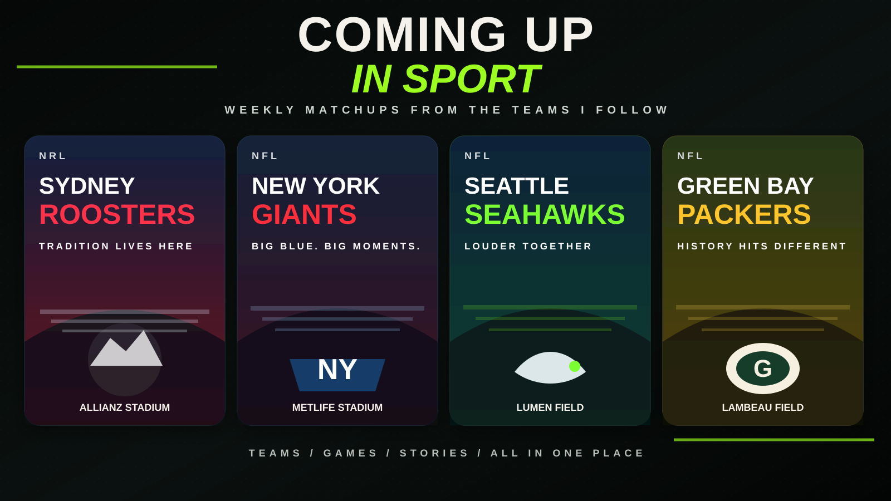

Signals • Songs • Side Trips
The Mixtape Pages
Chris’s Retro Corner of Signals, Songs & Side Trips. Horse racing tips thrown in free.

Changes every day
Today on The Mixtape Pages.
Latest / coming up
What’s moving through the mix
- Music: daily clip from the regular rotation.
- Live: Ed Kuepper at Marrickville and the Spy v Spy anniversary tour are on the radar.
- Watching: crime, dark drama and the shows we actually finish.
- Weekends: Saturday on the Punt appears Friday through Sunday afternoon.
Screen time
What We’re Watching
Crime, thrillers, dark drama and the series actually worth sticking with.
Open the watch list →Live rotation
Coming up in sport.
Roosters, Giants, Seahawks and Packers — the weekly fixtures, grounds and stories in one place.

Open this week’s sport →Sydney RoostersRoosters v Sharks
Saturday 19 September • 7:50pm SydneyAllianz Stadium
1 / 4
Official fixture →Friday → Sunday 3pm Sydney
Saturday on the Punt
This block appears only on the weekend. Friday’s selections stay live until Sunday afternoon.
Last week’s result: update this line when the new tips are posted.
Open the full card →
From the archive — changes daily
Photos with stories, not just galleries.
Trips, concerts, food, wine and moments that are better remembered with a bit of context.
Open the story →
JourneysCruises, New Zealand and the photos worth keeping.

Hunter ValleyCellar doors, favourite stops and long lunches.

The mixMusic, sport, screens, radio and everything in between.